10月21日：熊本城で流鏑馬を堪能した＆電車に乗った
執筆日時：
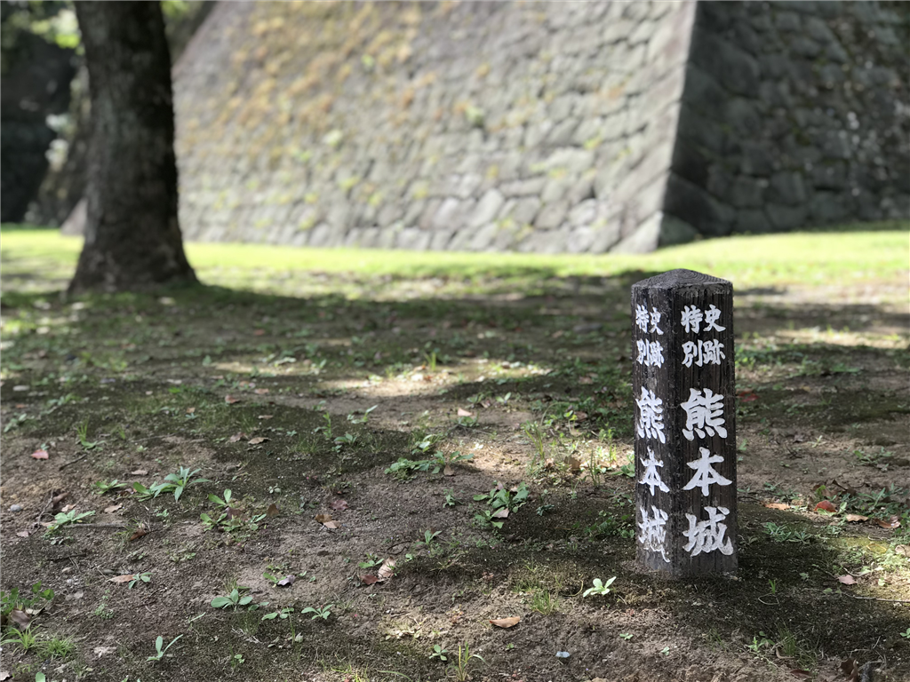
プロ生＠熊本の翌日は、2年ぶりの熊本観光を楽しんだ。
喫茶店で朝カレー
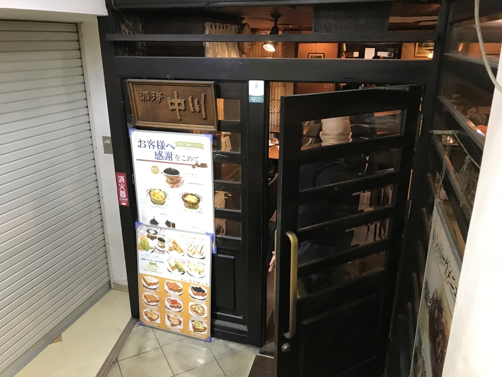
朝9時ぐらいにホテルを出て、@5zj と町へ向かう。@you_and_i さんと落ち合い、商店街で見つけたよさげな喫茶店で朝ご飯をとった。
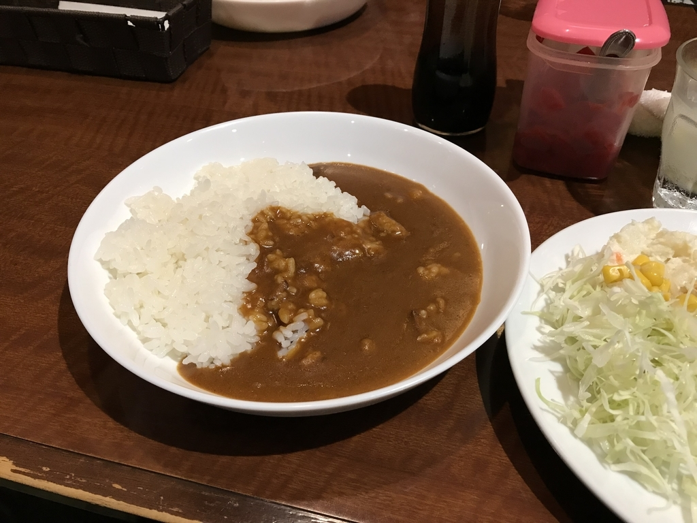
なぜか朝からカレー……ちょっとヘビーかなって思ったけど、意外にペロッと平らげてしまう。ここは24時間やってるそうで、なかなかに繁盛している。朝早くから熊本を徘徊していたという @you_and_i さんからいろいろ情報を収集して、ここでお別れ。@5zj と熊本城へ向かう。
熊本城で流鏑馬
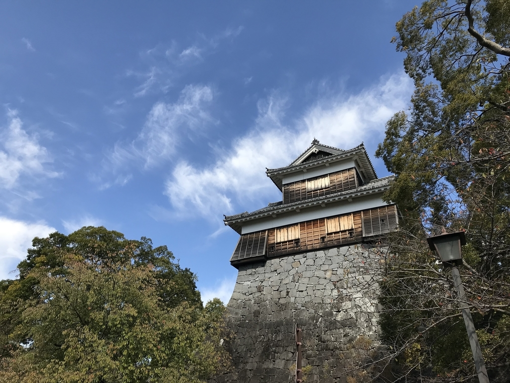
その日は天気が良く、大変気持ちがよかった。熊本城には以前にも来たので、だいたいは把握している。コインロッカーに荷物を預けて、二の丸へ上る。
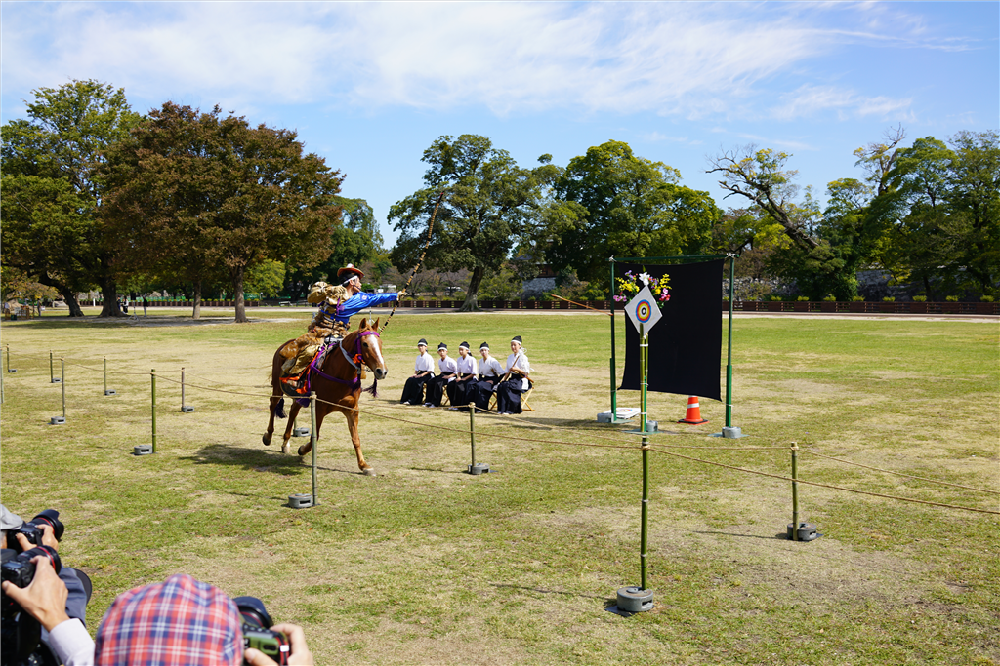
幸運にもこの日は流鏑馬の奉納が行われていて、広場には人だかりができていた。地元の放送局のヘリコプターも飛んできて、大変な爆音だ。カメラと三脚、小さな椅子でベストポジションを陣取るおじさんの後ろから覗き見ていると、親切にも使わない脚立を貸してもらえたので、そこからバシバシと撮影した。
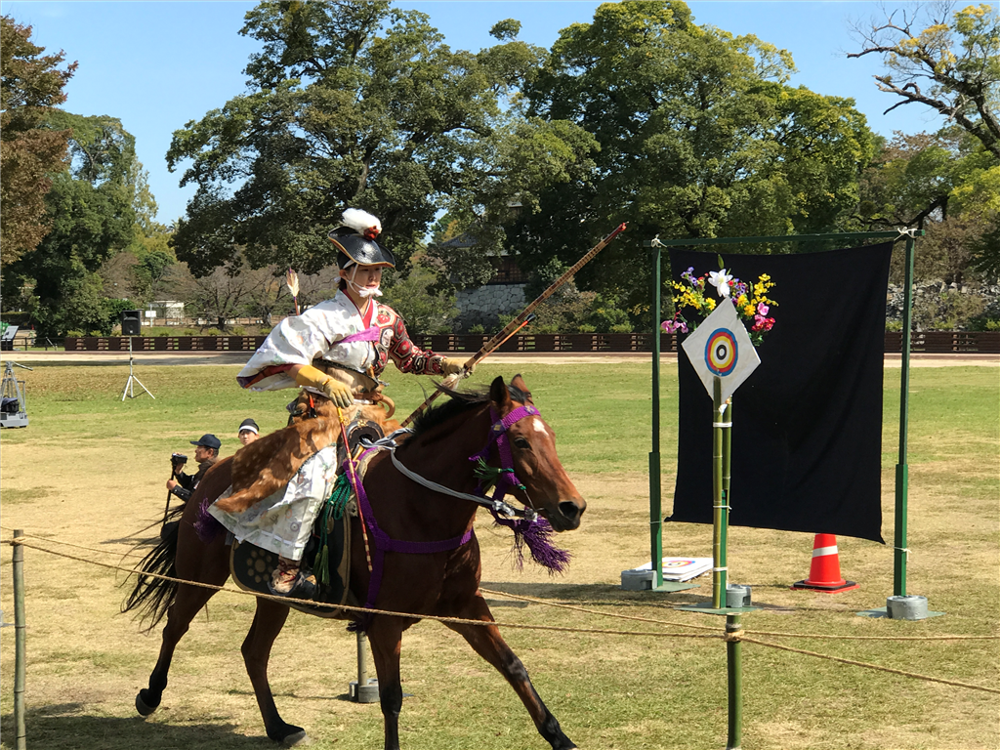
放送の案内によると、今に伝わる流鏑馬には小笠原流と武田流というのがあり、今回行われたのは武田流なのだそうだ。小さな子どもたちに流鏑馬を伝授する取り組みもあるようで、その日の矢取りや判定役もその子たちが協力してやってくれていたらしい。女性の射手もいて（緊張のせいか、的をとらえることはあまりできていなかったけど）、なかなか見ごたえがあった。
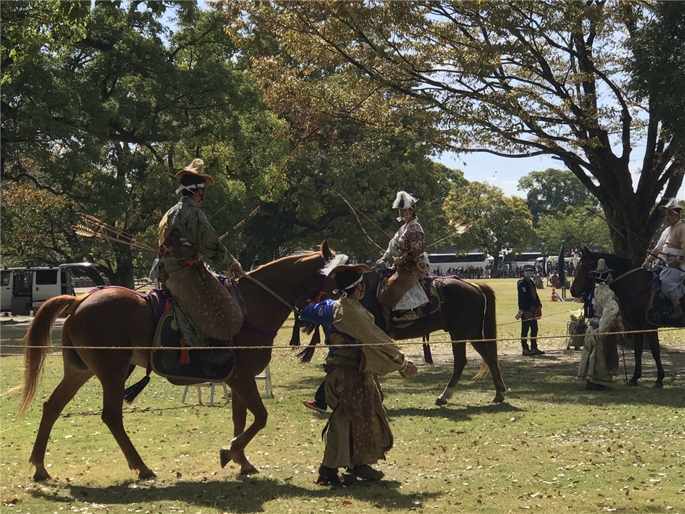
なにより、お馬さんがかわいい( *´艸｀)

熊本城の修築は、天守閣で多少進捗が見られるものの、周りの櫓はそれほどでもないみたい。石垣一つ組み上げるにも、並行して学術調査や防災対策などもしなきゃいけないのだろうし、いろいろ大変なのだろう。それでも空堀におりてみられるようになっているなど、2年前にはない工夫もあった。
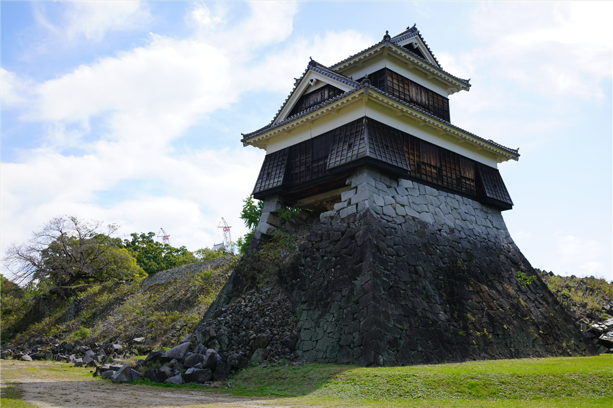
まじかで見ると割と迫力があっていい。それにしても、このかろうじて一連だけ残っている石垣、崩れないのかな？ 大事なのは端であって、面は割とどうでもいいのだろうか。もう一度大きな地震がきたら崩れそうで心配になる。
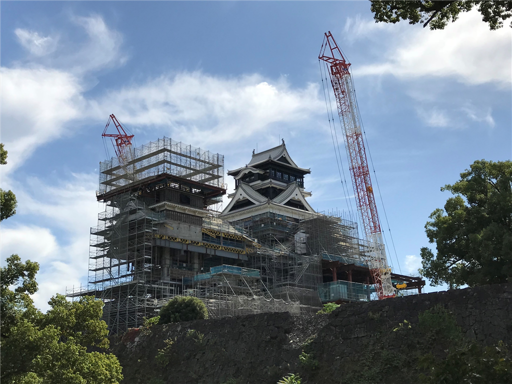
加藤神社から見た天守閣は、なんかメタモルフォーゼの最中だった。これはこれでカッコいい。素人目にはなにがどうなってんのかわからんが……ｗ
城彩苑
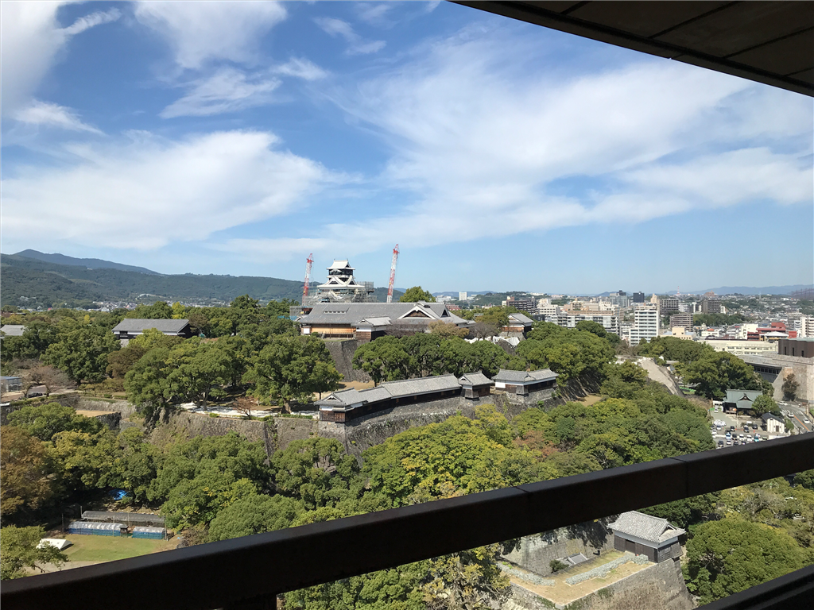
お城をぐるっと一周して、市役所で眺望を楽しみ、また城彩苑へ戻る。ちょっとおなかがすいたので、いろいろ食べた。
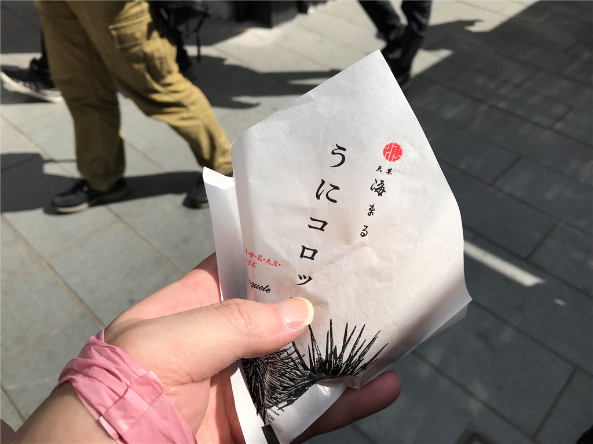
まずは「うにコロッケ」。ちょっと高かったけど、どうせなのでウニが濃い（？）方をチョイスしたら、なぜかおばちゃんが「一番大きいのをあげる！」。ありがたくいただくと、一口目はただのクリームコロッケ。ほのかにウニの香りがするかな？ っていう程度で、「おいおい、見掛け倒しだな」と思った。でも、二口目でウニソースに到達。強烈なウニのエキスが口いっぱいに広がって、「うお！？」となった。どうやら、ちょっと中身が偏ってたらしい。油断しすぎてか、なかのウニソースが垂れそうになったのでモキュモキュッと口の中に突っ込んでしまったが、なかなかにおいしかった。おばちゃんに感謝。
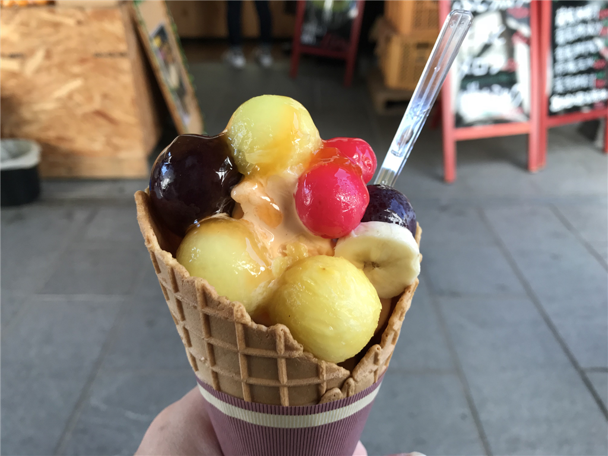
次はフルーツ一杯の「くだモン」。熊本はスイカやミカン、メロン、イチゴが有名みたいで（愛媛の某ミカンもご先祖は熊本生まれだと聞いたことがある）、わりとフルーツ王国なんだな。このパフェにミカンは入ってなかった気がするけど、小粒ミカンの販売なんかもやってた。
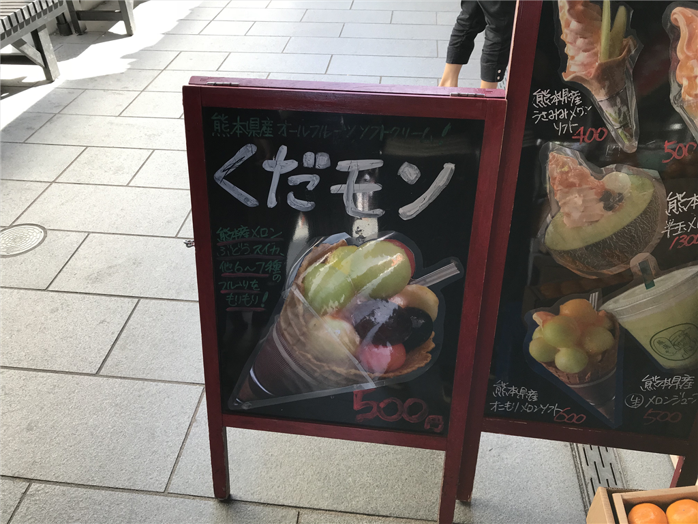
500円したけど、まぁまぁ、その価値はある気がする。
藤崎宮と電車
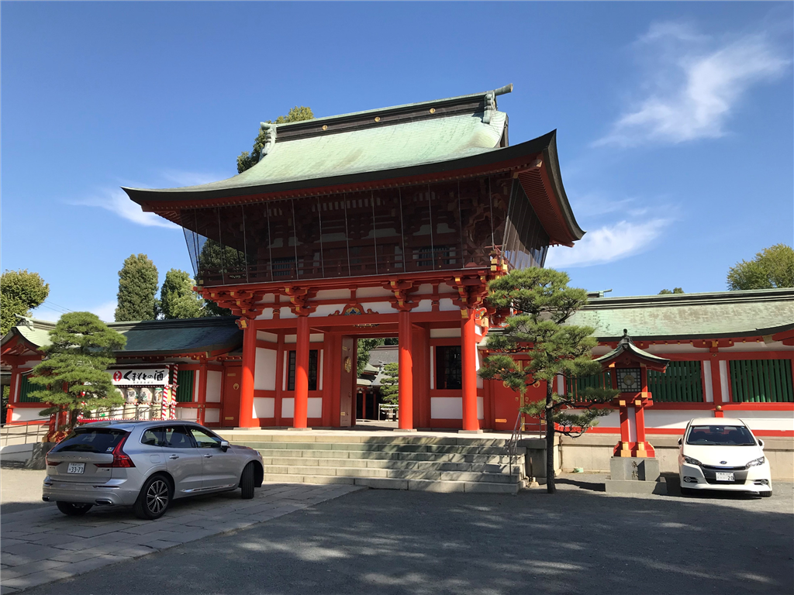
夕方の飛行機まではまだ時間があるので、そのあとは歩いて藤崎宮に参拝。
承平5年（935年）、敕願により藤原純友の乱の追討と九州鎮護のために、国府の所在地であった宮崎庄の茶臼山に石清水八幡宮から勧請を受けて創建された。九州の石清水五所別宮の一社である。鎮座のとき、勅使が馬の鞭としていた石清水の藤の枝を地面に刺したところ、芽を吹き枝葉が生えたので、「藤崎」を社名としたという伝承がある。国府八幡宮として国司や朝廷の崇敬を受けた。鎌倉時代以降は歴代領主の崇敬を受け、江戸時代には熊本城の鎮守社とされた。
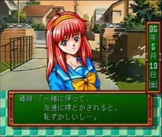
勉強会の懇親会で「ときメモ」がらみの参拝者もいるとかいないとか聞いたけど、それらしき人はおらず、七五三？らしき家族連れが数組いたぐらいで、静かな神社だった。でも、例大祭は割と大がかりみたい。参道も立派だった。
ここから少し歩くと、熊本電鉄の「藤崎宮前」駅がある。
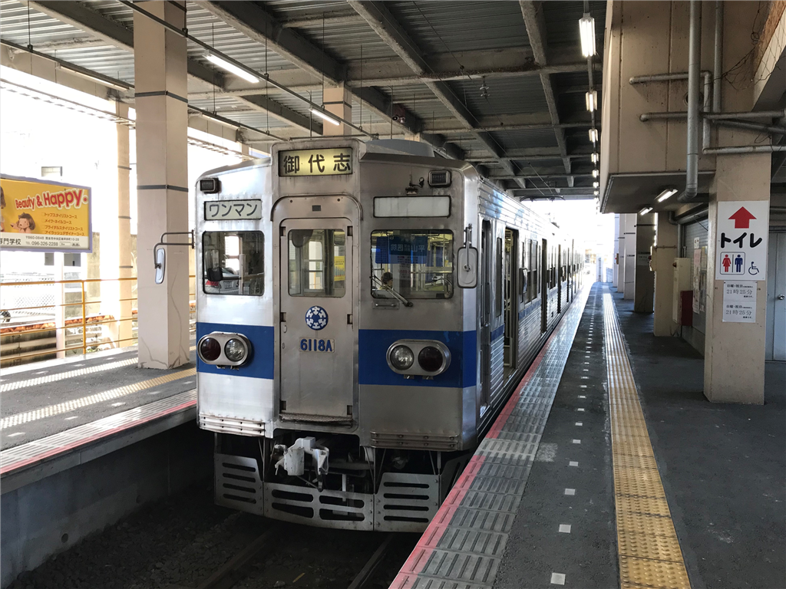
自分は熊本の鉄道網があまりよくわかってなかったのだけど、これは市電とは違うらしい。こういうのは Google マップだと見落としやすい……なんで市電が繋がってない（環状にしていない）のかなって思ってた。
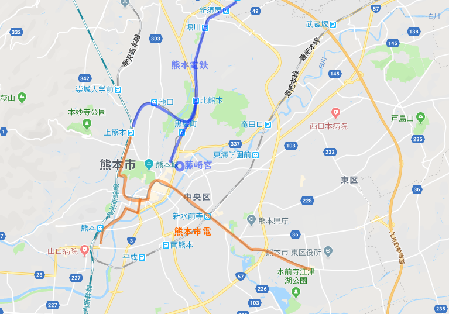
今回は藤崎宮～北熊本、北熊本～上熊本間を乗車。藤崎宮～北熊本～御代志が本線で、途中の北熊本から上熊本（熊本市電・JR九州鹿児島線に接続）へ行く路線は支線という扱いみたい。
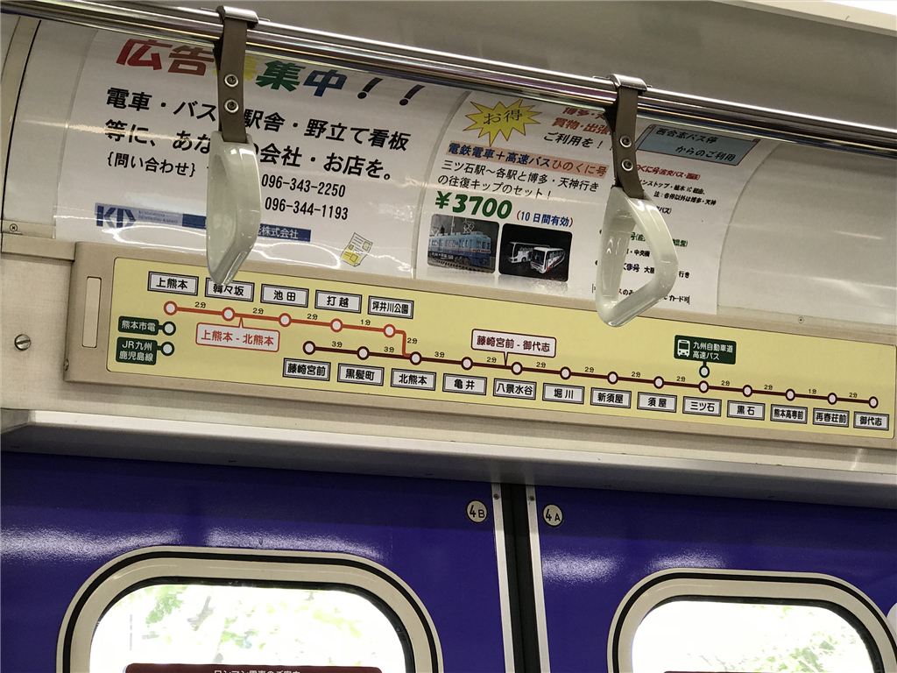
ちなみに、SUICA もつかえる。ちょっと初見ではわかりづらかったけど、藤崎宮前駅のホームでタッチすれば、整理券をもらわず・車内でタッチせず乗り換えして上熊本まで行って構わないようだ。
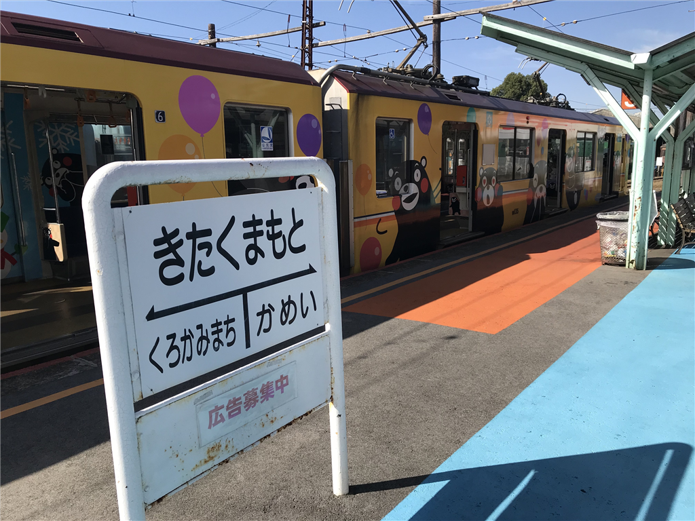
北熊本までは割とすぐ。町の中を縫うように、シャーシャーとレールを軋ませながら、くねくね・ゆっくり・ゴトゴトと進む。日曜の昼間だったがそれなりに人は乗っている。最初は複数両編成にするほど使われるのか？ と訝しんでいたけど、それなりに愛されているみたい。
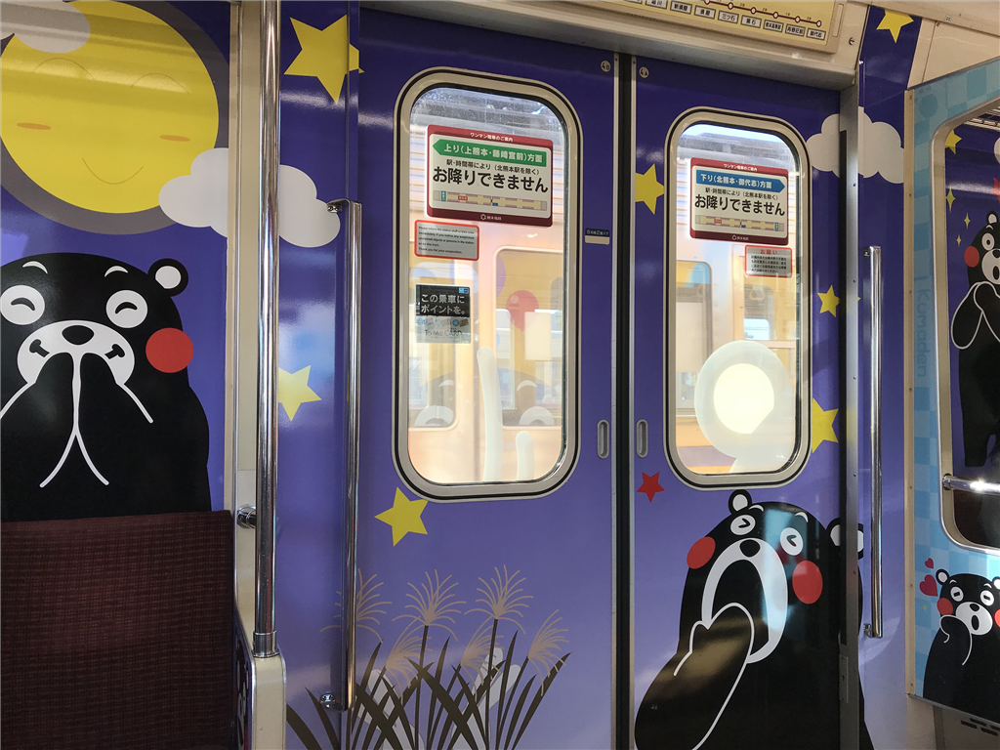
ただ、北熊本で乗り換えた電車は強烈で、内装がくまモン一色だった。かわいいけど……すげえなｗ
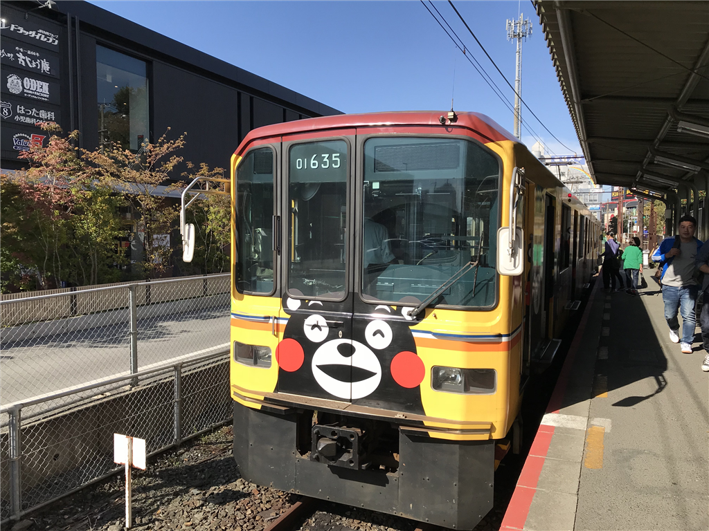
上熊本でくまモン電車とはお別れ。
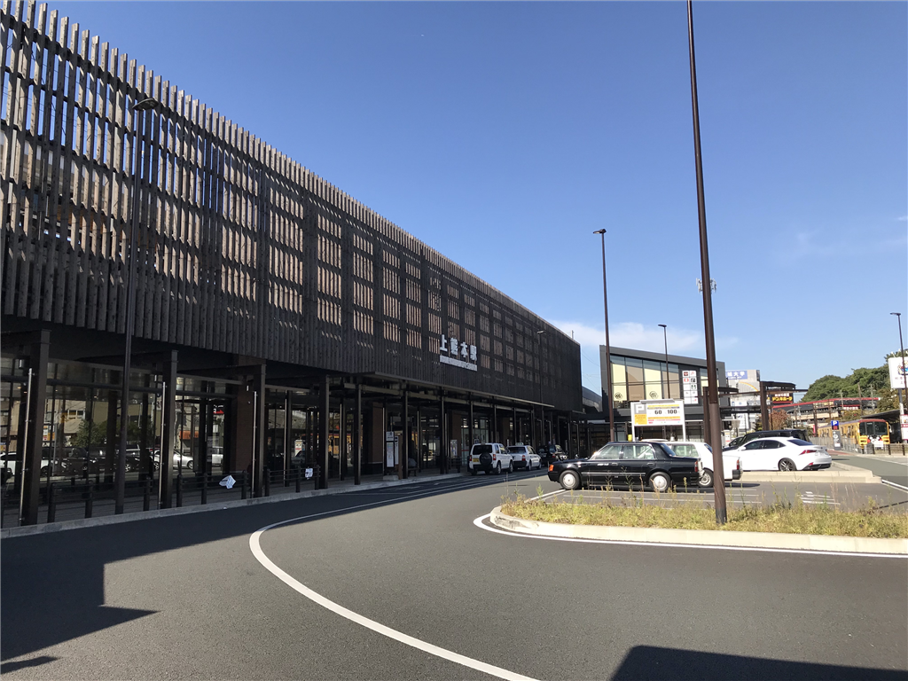
上熊本は、JR 熊本の次の駅。どうせ各駅停車しか止まらないくせに JR 松山駅より立派で、震えが止まらない。
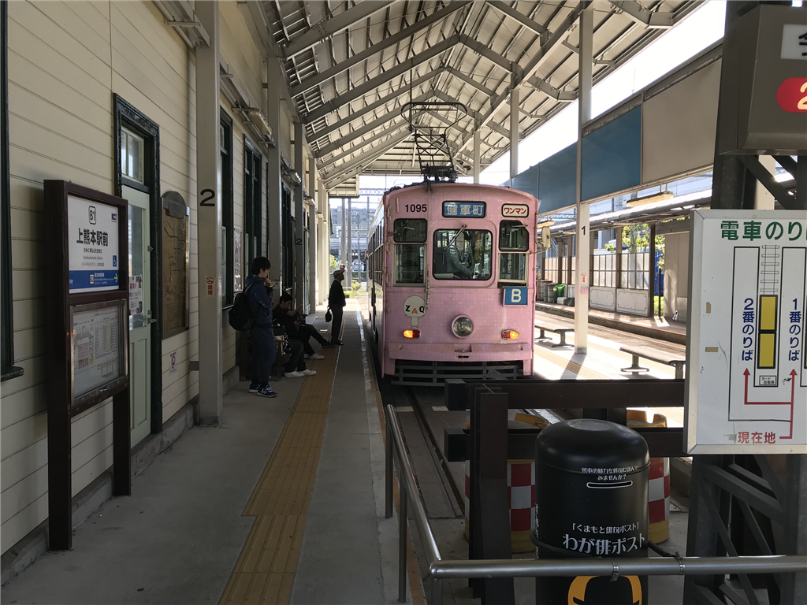
熊本駅は割と辺鄙なところにあるので、ここからの方が市街地には近いみたい。市街地に向かう市電も出ていて、利用者はそこそこいそう。JR の駅からは八代や大牟田への電車が出ているようだ。
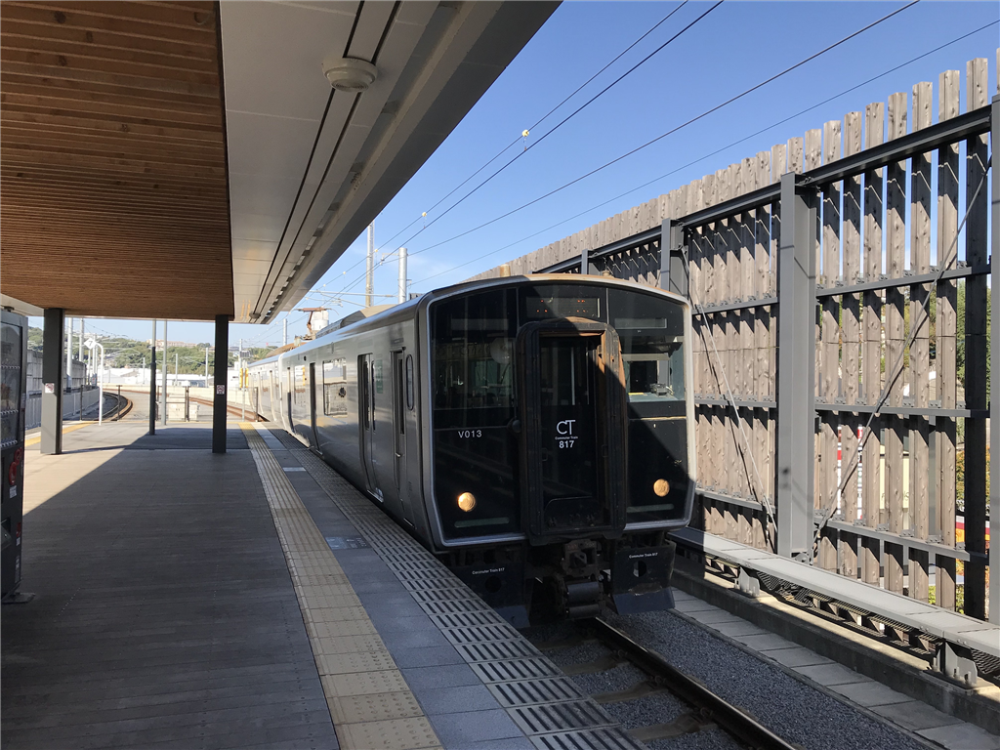
ここから熊本駅へ移動して、今回の観光は終わり。お疲れさま！
P.S.
熊本駅から福岡空港へ向かったが、同じくそこから熊本空港へ向かった @5zj よりも早く着いた。 新幹線は偉大だと思った。